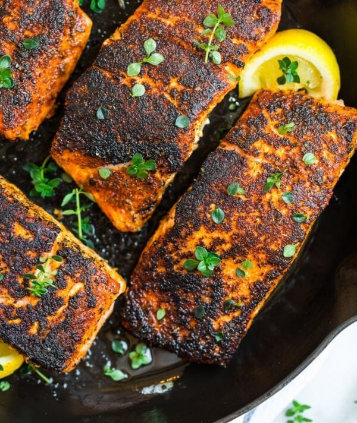

Blackened Salmon

Blackening is a cooking technique used with any firm-bodied fish, and it's popular
with chicken as well. The fillets are brushed with butter, then coated liberally with
a blend of herbs and spices. The salmon isn't burned, rather the color comes from the
milk solids in the butter deeply toasting and the spices charring when the fish hits
the hot pan.
Ingredients:
- Salmon
- Paprika
- Salt
- Garlic powder
- Onion powder
- Cayenne
- Thyme
- Oregano
- Brown sugar
- Butter
- Lemon
Directions:
- Pat the salmon fillets dry, melt the butter, and
stir the blackening rub ingredients together.
- Brush the butter over the fillets. Top each fillet with
the rub mixture. I like to use a little spoon the scatter it on,
then pat it with my fingers.
- Start the salmon fillets flesh (spice)-side down in a hot pan.
Flip each piece over and cook on the other side.
- Top with lemon juice, and ENJOY!